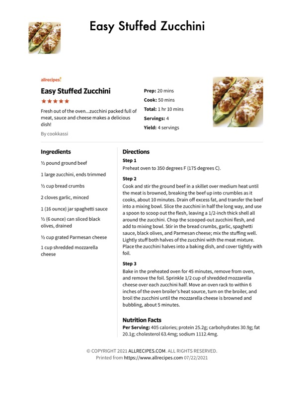

Easy Stuffed Zucchini

Original cookbook page 211
Fresh out of the oven...zucchini packed full of meat, sauce and cheese makes a delicious dish! Recipe by cookkassi from Allrecipes.com
Prep: 20 minutes • Cook: 50 minutes • Total: 1 hr 10 minutes
Ingredients
- ½ pound ground beef
- 1 large zucchini, ends trimmed
- ½ cup bread crumbs
- 2 cloves garlic, minced
- 1 (16 ounce) jar spaghetti sauce
- ½ (6 ounce) can sliced black olives, drained
- ½ cup grated Parmesan cheese
- 1 cup shredded mozzarella cheese
Instructions
- Preheat oven to 350 degrees F (175 degrees C).
- Cook and stir the ground beef in a skillet over medium heat until the meat is browned, breaking the beef up into crumbles as it cooks, about 10 minutes. Drain off excess fat, and transfer the beef into a mixing bowl. Slice the zucchini in half the long way, and use a spoon to scoop out the flesh, leaving a 1/2-inch thick shell all around the zucchini. Chop the scooped-out zucchini flesh, and add to mixing bowl. Stir in the bread crumbs, garlic, spaghetti sauce, black olives, and Parmesan cheese; mix the stuffing well. Lightly stuff both halves of the zucchini with the meat mixture. Place the zucchini halves into a baking dish, and cover tightly with foil.
- Bake in the preheated oven for 45 minutes, remove from oven, and remove the foil. Sprinkle 1/2 cup of shredded mozzarella cheese over each zucchini half. Move an oven rack to within 6 inches of the oven broiler's heat source, turn on the broiler, and broil the zucchini until the mozzarella cheese is browned and bubbling, about 5 minutes.
📝 Recipe Notes
Nutrition per serving: 405 calories, 25.2g protein, 30.9g carbs, 20.1g fat, 63.4mg cholesterol, 1112.4mg sodium. From Allrecipes.com
Recipe #211 from collection